Estimated time needed: 25 minutes
In this lab, first you will learn how to manage MySQL user accounts and roles using phpMyAdmin graphical user interface (GUI) tool. Then you will learn how to control access to MySQL databases and their objects. Finally you will learn how to secure your data adding extra layer of security using data encryption.
After completing this lab, you will be able to use the phpMyAdmin to:
In this lab, you will use MySQL. MySQL is a Relational Database Management System (RDBMS) designed to efficiently store, manipulate, and retrieve data.

To complete this lab you will utilize the MySQL relational database service available as part of the IBM Skills Network Labs (SN Labs) Cloud IDE. SN Labs is a virtual lab environment used in this course.
The World database used in this lab comes from the following source: https://dev.mysql.com/doc/world-setup/en/ under CC BY 4.0 License with Copyright 2021 - Statistics Finland.
You will use a modified version of the database for the lab, so to follow the lab instructions successfully please use the database provided with the lab, rather than the database from the original source.
The following ERD diagram shows the schema of the World database:
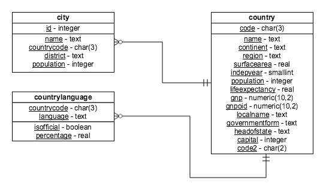The first row is the table name, the second is the primary key, and the remaining items are any additional attributes.
In this example exercise, you will go through an example on how to manage MySQL user accounts and roles using phpMyAdmin.
User management is the process of controlling which users are allowed to connect to the MySQL server and what permissions they have on each database. phpMyAdmin does not handle user management, rather it passes the username and password on to MySQL, which then determines whether a user is permitted to perform a particular action. Within phpMyAdmin, administrators have full control over creating users, viewing and editing privileges for existing users, and removing users.
Click the Start button and wait until MySQL service session gets launched.
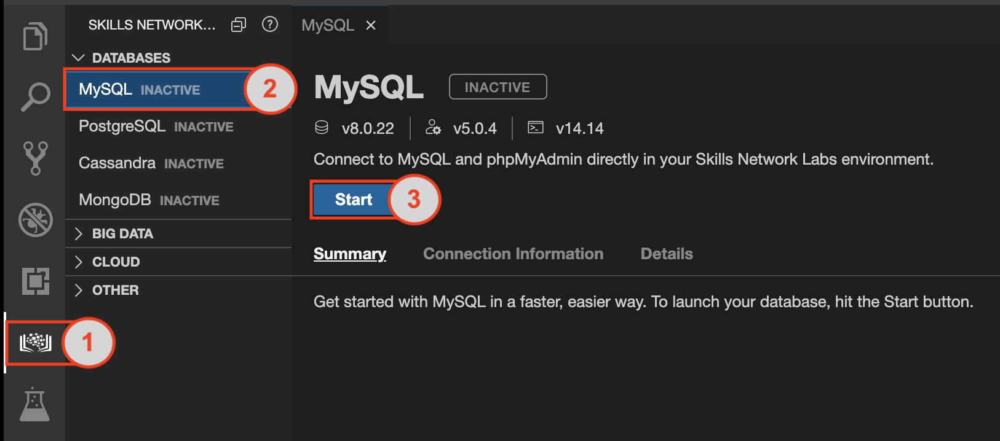
The MySQL server will take a few moments to start. Once it is ready, you will see the green "Active" label near the top of the window.
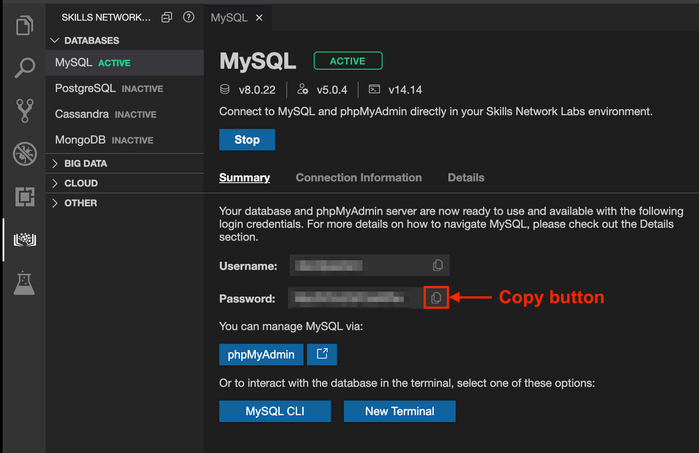
NOTE: Whenever you are required to enter your MySQL service session password from the MySQL service session tab at any step of the lab, copy the password by clicking on the small copy button on the right of the password block. Paste the password into the terminal using Ctrl + V (Mac: ⌘ + V), and press Enter on the keyboard. For security reasons, you will not see the password as it is entered on the terminal.
Click phpMyAdmin button from the mysql service session tab. You will see the phpMyAdmin GUI tool.
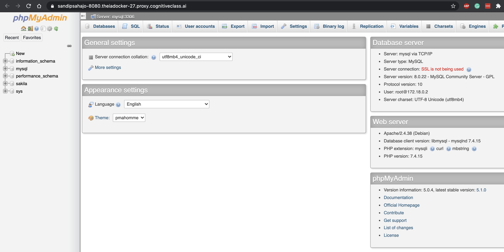
In the tree-view, click New to create a new empty database. Then enter world as the name of the database and click Create.
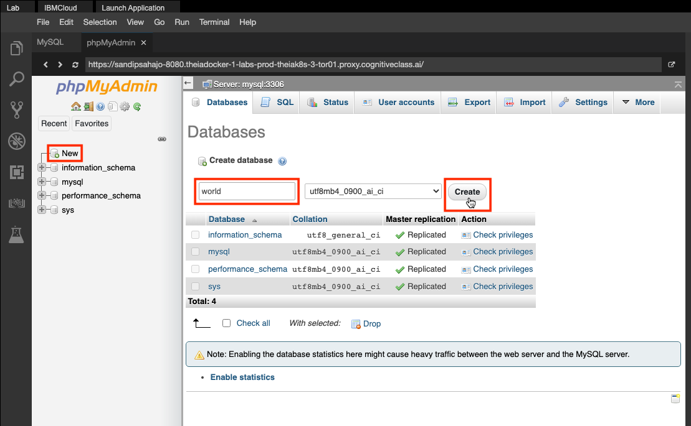
Go to the Import tab. Upload the following sql script file using the Choose File button (first download the following sql script file to your local computer storage). Then click Go button at the bottom. You will be notified when the import successfully gets finished. Click the Home icon.
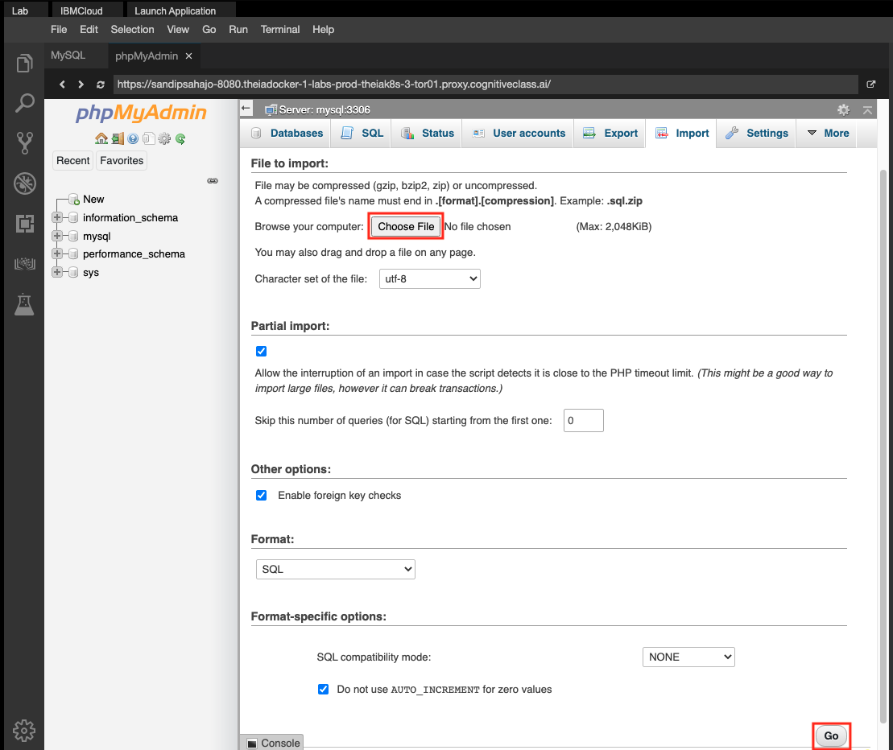
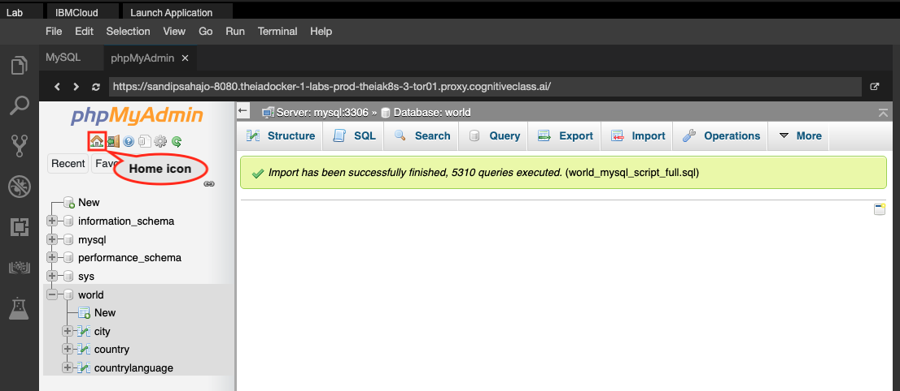
Now you will create a user account with custom role "db_owner". Usually a user with db_owner role has all global privileges and access to all exisitng databases. Go to the User accounts tab and click Add user account.
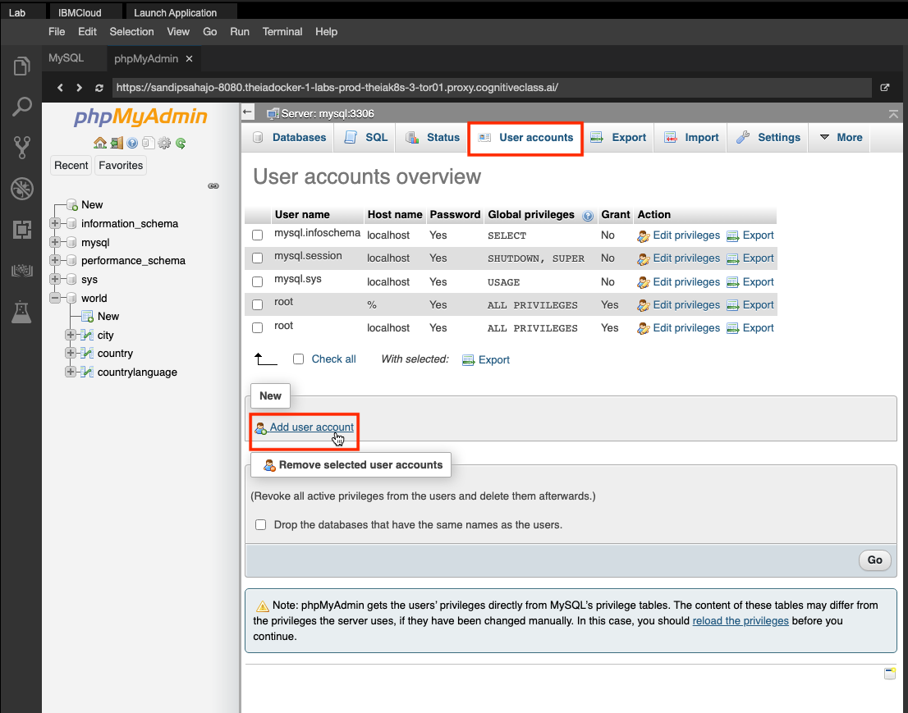
Fill the Login Information as shown in following image (enter your own password). Under Global privileges, click Check all. Scroll down and click Go.
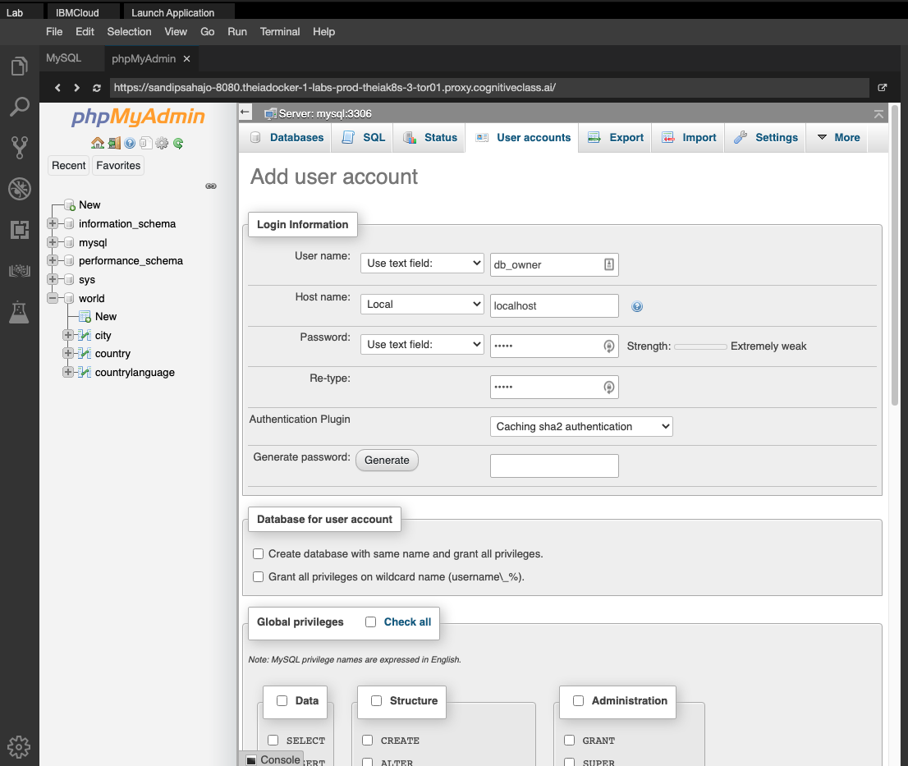
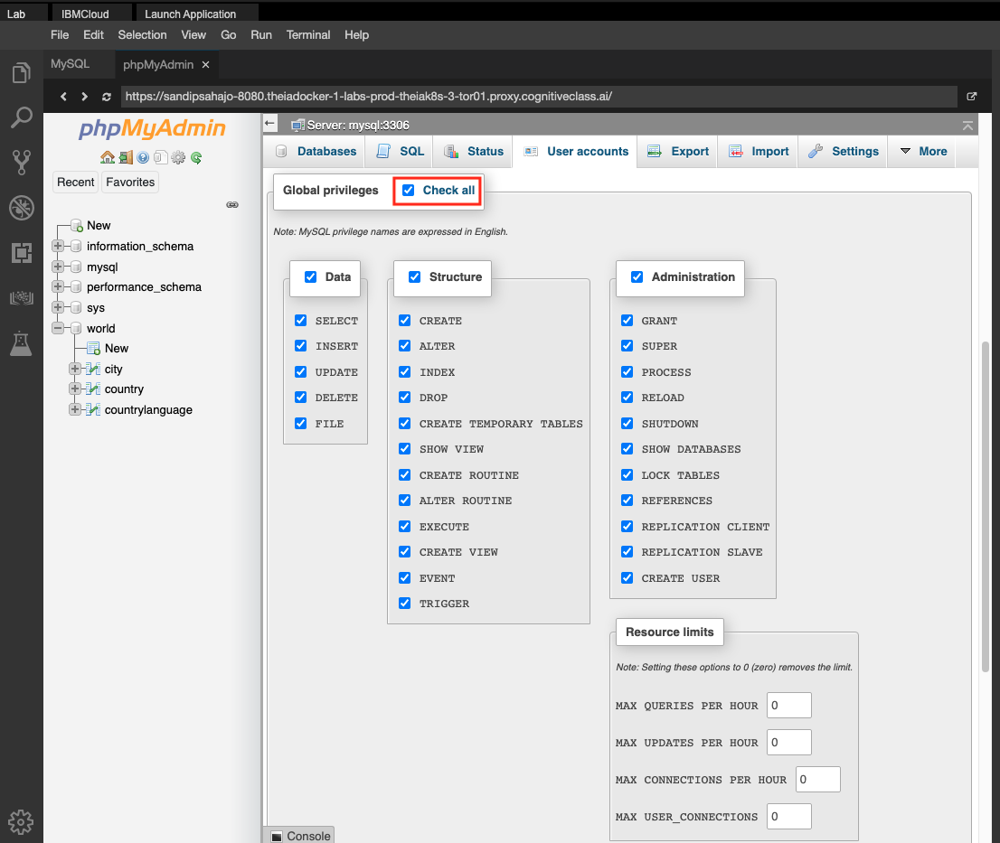
You have successfully created a user account with appropriate privileges.
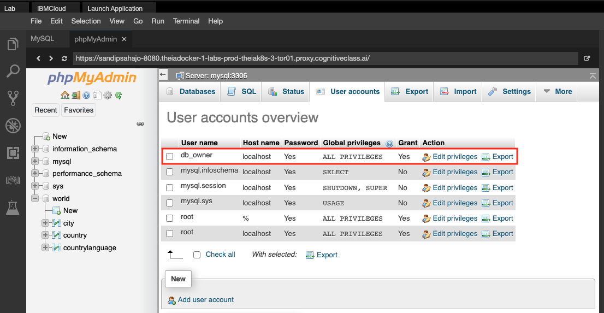
In this example exercise, you will learn how to control access to MySQL databases and their objects.
Making an exception to the user definition of db_owner role you created earlier, you will modify privileges of this user so that this user won't be able to update other columns except a specifc column of a specific table of a specific database. You will restrict db_owner from updating all the other columns except the column Population of the table city of the database world.
Go to Home > User accounts tab. Click Edit privileges option of db_owner user name.
Under Database sub-tab, select world database and click Go.
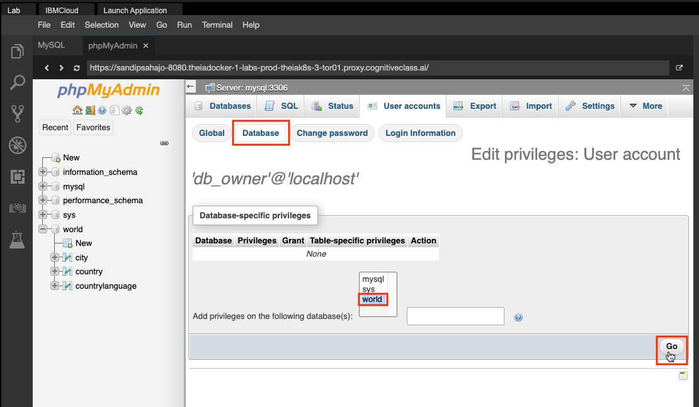
Under Database-specific privileges, select Check all and click Go at the bottom.
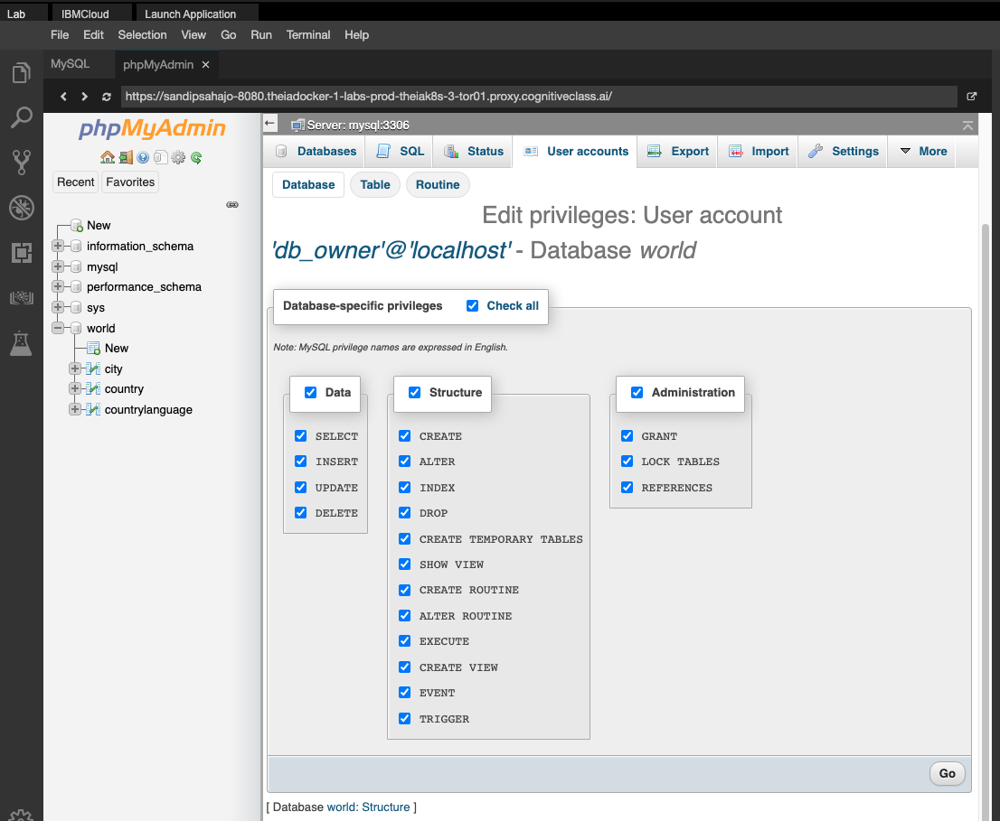
Switch to Table sub-tab. Select the table city from the drop-down menu and click Go.
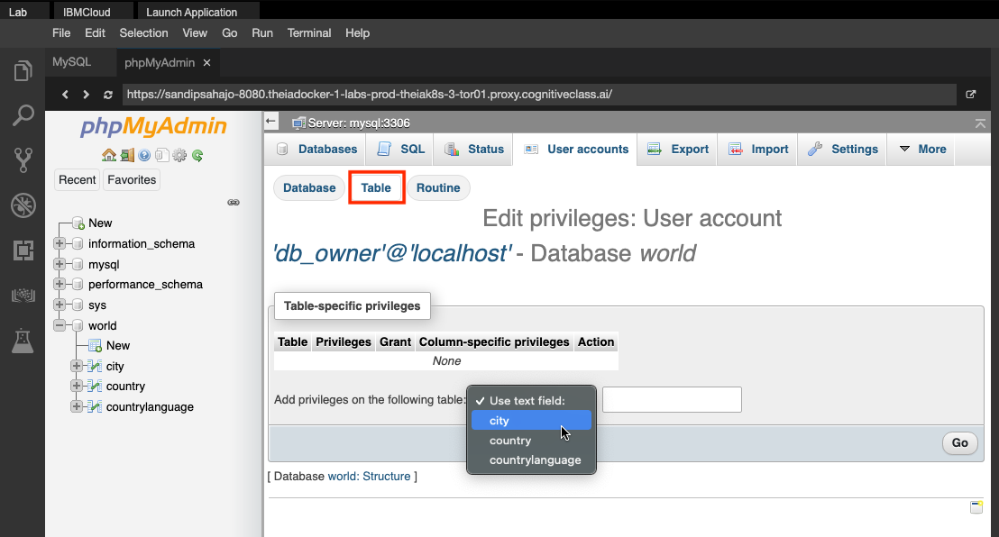
Under Table-specific privileges, configure all the SQL commands and their custom access to the columns of the table city as shown below. Then click Go. Such table-specific privilege configuration will restrict db_owner from updating all the other columns except the column Population of the table city of the database world.
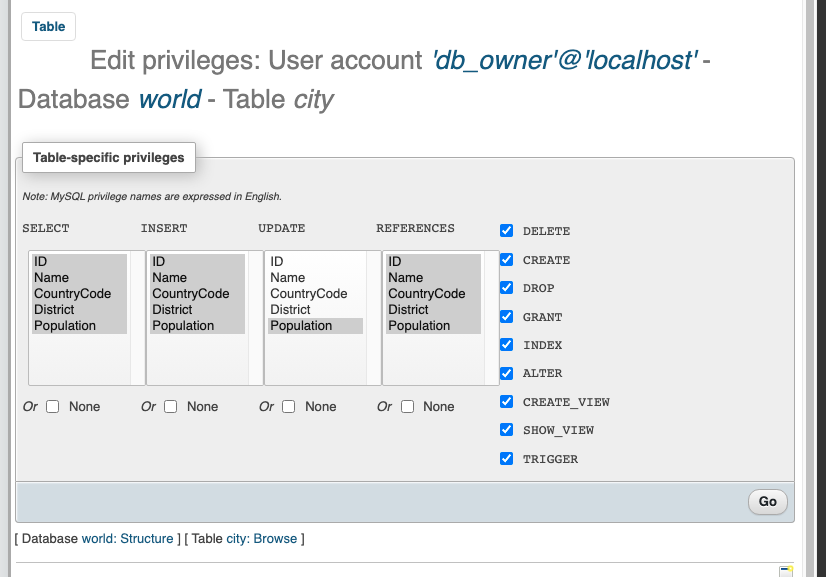
In this example exercise, you will learn how to secure your data adding extra layer of security using data encryption. There may be certain parts of your database containing sensitive information which should not be stored in plain text. This is where encryption comes in.
You will implement encryption and decryption of a column in the world database using the official AES (Advanced Encryption Standard) algorithm. AES is a symmetric encryption where the same key is used to encrypt and decrypt the data. The AES standard permits various key lengths. By default, key length of 128-bits is used. Key lengths of 196 or 256 bits can be used. The key length is a trade off between performance and security. Let's get started.
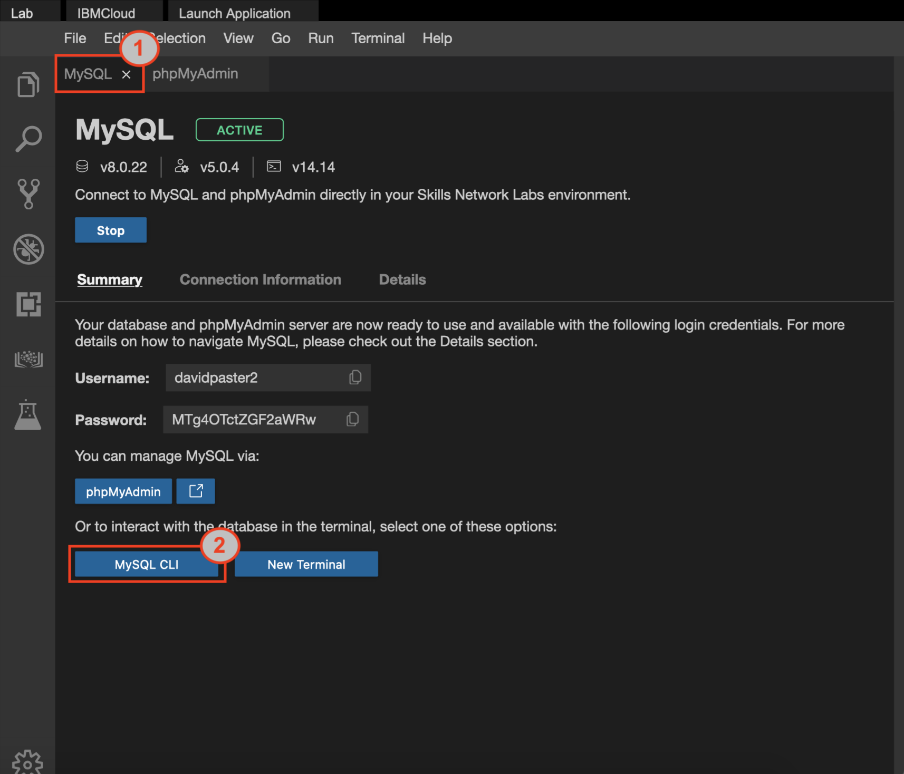
First, you will need to hash your passphrase (consider your passphrase is My secret passphrase) with a specific hash length (consider your hash length is 512) using a hash function (here you will use hash function from SHA-2 family). It is good practice to hash the passphrase you use, since storing the passphrase in plaintext is a significant security vulnerability. Use the following command in the terminal to use the SHA2 algorithm to hash your passphrase and assign it to the variable key_str:
ini
SET @key_str = SHA2('My secret passphrase', 512);
Now, let's take a look at the world database. First, you will want to connect to the database by entering the following command in the CLI:
abnf
USE world;
Next, let's take a quick look at the countrylanguage table in our database with the following command:
n1ql
SELECT * FROM countrylanguage LIMIT 5;
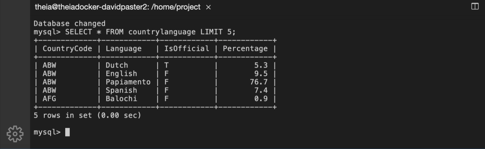
For demonstration purposes, suppose that the last column in the table, labeled Percentage contains sensitive data, such as a citizen's passport number. Storing such sensitive data in plain text is an enormous security concern, so let's go ahead and encrypt that column.
To encrypt the Percentage column, we will first want to convert the data in the column into binary byte strings of length 255 by entering the following command into the CLI:
sql
ALTER TABLE countrylanguage MODIFY COLUMN Percentage varbinary(255);
Now to actually encrypt the Percentage column, we use the AES encryption standard and our hashed passphrase to execute the following command:
less
UPDATE countrylanguage SET Percentage = AES_ENCRYPT(Percentage, @key_str);
Let's go ahead and see if the column was successfully encrypted by taking another look at the countrylanguage table. We again run the same command as in step 4:
n1ql
SELECT * FROM countrylanguage LIMIT 5;
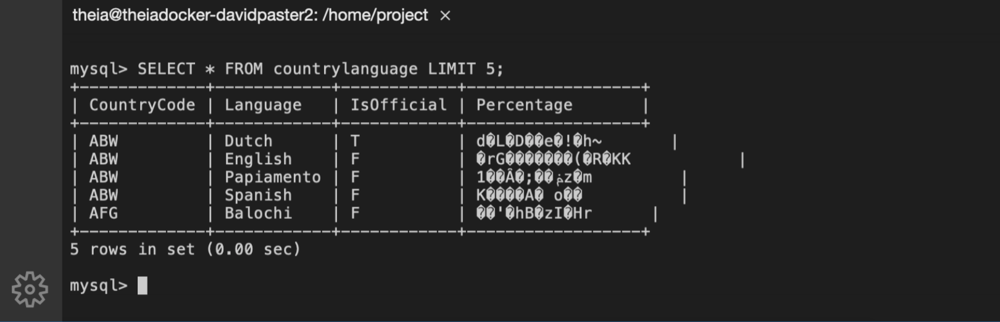
As you can see, the data on the Percentage column is encrypted and completely illegible.
The supposedly sensitive data is now encrypted and secured from prying eyes. However, we should still have a way to access the encrypted data when needed. To do this, we use the AES_DECRYPT command, and since AES is symmetric, we use the same key for both encryption and decryption. In our case, recall that the key was a passphrase which was hashed and stored in the variable key_str. Suppose we need to access the sensitive data in that column. We can do so by entering the following command in the CLI:
less
SELECT cast(AES_DECRYPT(Percentage, @key_str) as char(255)) FROM countrylanguage;
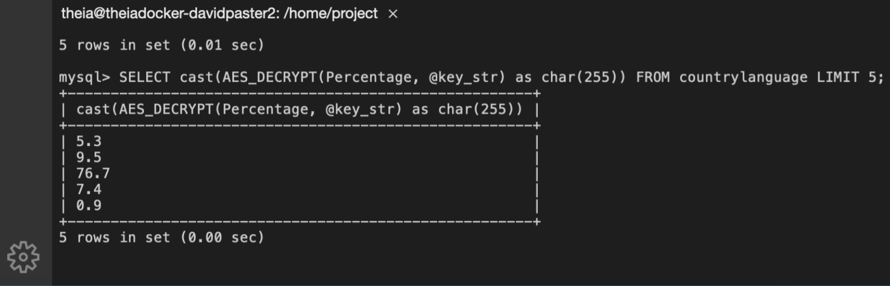
In this practice exercise, you will get to put what you learned to use and modify privileges for a user.
Scenario: You will modify privileges of the user db_owner you created in example exercise A such a way that this user won't be able to insert, update and delete any column of a specific table country of the world database.
Follow example exercise 2. If necessary create the user account following example exercise 1.
Go to Home > User accounts tab. Click Edit privileges option of db_owner user name.
Under Database sub-tab, select world database and click Go.
Under Database-specific privileges, select Check all and click Go at the bottom.
Switch to Table sub-tab. Select the table country from the drop-down menu and click Go.
Under Table-specific privileges, configure all the SQL commands and their custom access to the columns of the table city as shown in the following image. Then click Go. Such table-specific privilege configuration will restrict db_owner from inserting, updating and deleting any column of a specific table country of the world database.
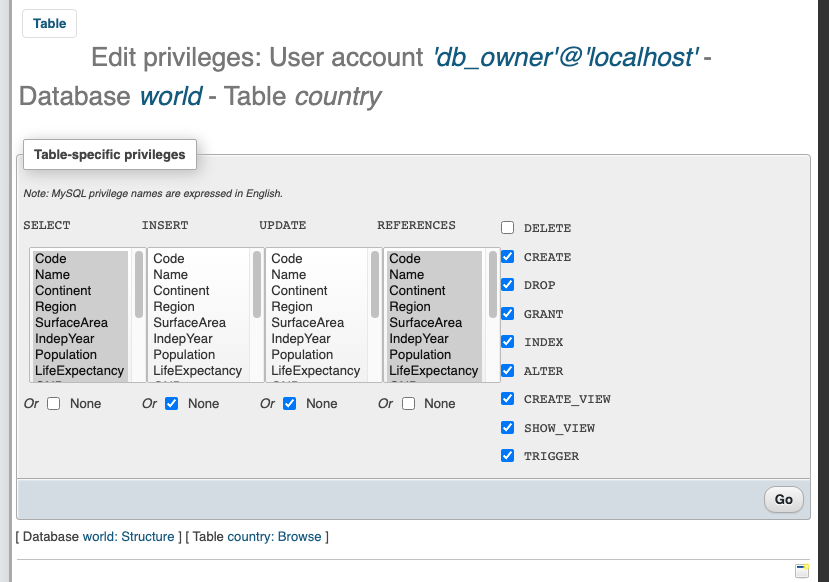
| Date | Version | Changed by | Change Description |
|---|---|---|---|
| 2021-07-13 | 1.0 | Sandip Saha Joy | Created initial version |
| 2021-10-05 | 1.1 | David Pasternak | Updated instructions |
| 2021-10-13 | 1.2 | Steve Hord | Copy edits |